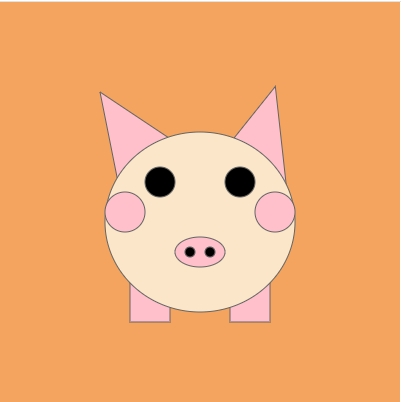
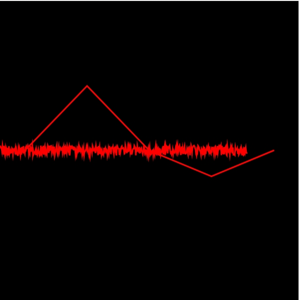
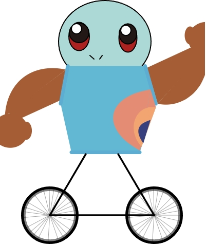
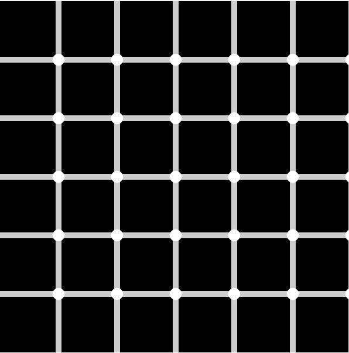
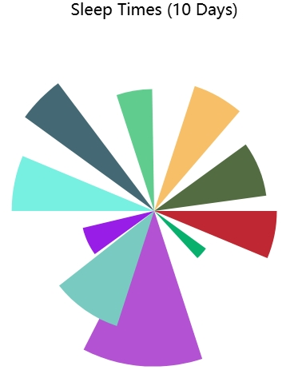
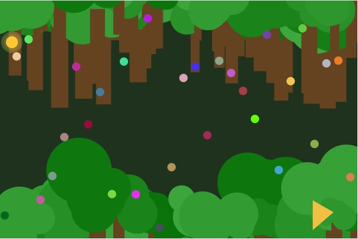

Assignment 1 - Lost and Found
Assignment 2 - Face Generator

Assignment 3 - Experimental Clock

Assignment 4 - Exquisite Corpse

Assignment 5 - Optical Illusion

Assignment 6 - Data Portrait

Assignment 7 - Autobiographical Game